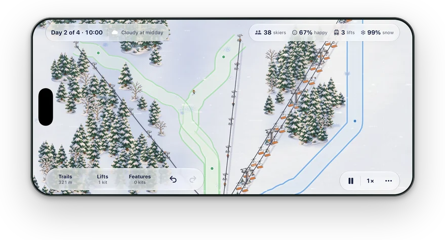
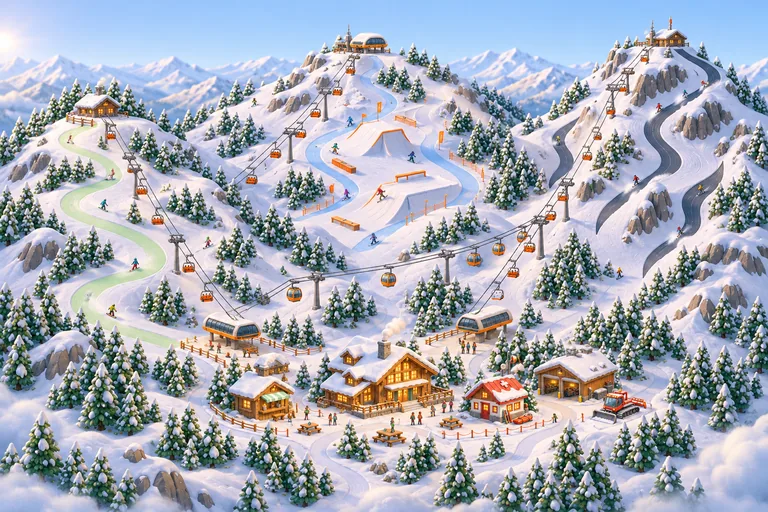

iPhone 和 iPad 上的滑雪场经营游戏
一座小雪山。 无数种可能。
画出雪道和索道，然后看着小小的滑雪者排队、转弯，追着新雪跑。一次买断。没有广告。没有内购。
一次买断，没有广告，没有内购，不用注册账号。完全离线运行。需要 iOS 18 或更新版本。


怎么玩
画出雪道，看着他们滑。
一笔下去，整座山就活了。你只管画雪道和索道；滑雪者、天气和排队会自己回应。
-
一
画雪道
手指贴着地形向下拖。坡度由地形决定：横切陡坡就变缓，直着落下就是黑道。
-
二
让索道转起来
雪道把人送下山，索道把人送上去，而队伍就排在索道这里。先从一条拖牵开始，沿着山脊架上吊椅，再送一条缆车上山顶。
-
三
看着他们滑
初学者、家庭、悠闲派、高手和冒险派，各自挑合适的雪道，排队，追着新雪跑，累了就回家。哪里卡住了，游戏会告诉你位置。
地形说了算
每条雪道都标着自己的难度。
难度既用颜色也用形状标记，所以不依赖辨色能力也能一眼读懂。最陡的几条还会多一个菱形。
- 绿色圆形初级
- 蓝色方形中级
- 黑色菱形高级
这套圆形、方形、菱形的标记来自北美雪场，国内不少雪场也在用；另一些则只用绿、蓝、黑的颜色来区分初、中、高级。
游戏画面
走近这座山。

画一座滑雪场。 
瓶颈在索道。 
小小的建筑，不小的作用。 
天气会改变一切。
旅程
五座山，每座都有自己的脾气。
每座山都是一段四到六天的小剧本，各有三枚奖牌。
这些是选择雪山时出现的章节插画，不是游戏画面；游戏画面在上面。
-

第 1 章 · 入门
Alpine Dawn
小村子上方开阔的雪坡。你的第一条雪道、第一条索道和第一批滑雪者。
-
第 2 章 · 排队
Pine Valley
索道都汇到一处繁忙下站的林间山谷。让队伍一直动起来。
-

第 3 章 · 雪
Glacier Basin
向阳洼地之上的冰雪高盆。让雪撑得久一点。
-

第 4 章 · 风
High Ridge
避风雪道之上的一道裸露山脊。要算上大风停掉高处索道的那些日子。
-

第 5 章 · 全都来
Three Peaks
三座山峰共用一个村子。排队、雪量和大风，全都一起来。
这座山本身就是操作界面
小小的世界，真实的取舍。
没有表格，也没有要管理的菜单。点一下索道或雪道，就知道那里为什么挤，以及做什么会有用。
会自己拿主意的滑雪者
初学者、家庭和高手会按水平、等待和雪况自己选路线。
瓶颈在索道
排队来自真实的客流和真实的运力。给挤爆的吊椅索道升个级，再看看人流下一步挪到哪里。
能照着安排的预报
预报会在暴风雪、大风和回暖到来之前先告诉你。新雪会把高手叫来；大风则可能停掉暴露的索道。
雪是会用完的
向阳的低处会越滑越薄，高处的洼地却能守住积雪。造在哪里，决定这一天能撑多久。
每天早上一个决定
索道开门之前，你定下这一天的重点。剩下的交给各个班组。
撤销、暂停、快进
每一处改动都能撤销和重做，随时暂停，顺畅的时候还能快进。
六种设施
改变这一天的六种办法。
每一种都会改变滑雪者的去向、积雪的保持时间，或者这座山运转得有多安全。
- 地形公园把玩花样的滑雪者吸引到周围的雪道上。
- 大运力索道把更多人送上山。注意它通向的那些雪道。
- 暖房让滑累的人歇一歇、暖一暖。
- 压雪站让附近的雪道一天天都保持状态。
- 巡逻站天气转坏时，帮着把这一带留在开放状态。
- 造雪机在冷天守住覆盖范围里的积雪。
三种玩法
冲奖牌，慢慢造，或者挑战今天的山。
-
从这里开始
旅程
五座山，每座三枚奖牌。Alpine Dawn 教你入门，Pine Valley 考你的排队，Glacier Basin 考你的雪量，High Ridge 考你的风，Three Peaks 则一起考。看看这些山
-
Zen
按自己的节奏造，不会失败。
-
每日之峰
每天一座新山，所有人都一样。
玩着舒服
为山上的每一个人考虑。
辅助功能与舒适度
- 难度从不只靠颜色：圆形、方形、菱形
- 遵循「减弱动态效果」
- 点按区域大，至少 44 点
- 游戏速度可调，随时暂停
- 完全离线运行
- iPhone 横屏，iPad 也支持